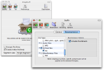
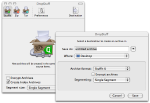
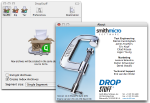

What's New in DropStuff 12?
Dropstuff 12 includes powerful new technology that provides highly efficient compression of a wide range of media file types.
MEDIA RECOMPRESSION |
|
|  | DropStuff now includes new technology that provides highly efficient compression of MP3s, PDFs and common image formats such as PNG, GIF, BMP, TIFF and more. DropStuff also includes new technology that provides our best ever compression of documents created by Apple’s iWork and the new Open XML-based file format introduced by Microsoft in Office 2007. |
OTHER NEW FEATURES |
|
|  | The ability to create archives that are backward compatible with earlier versions of our popular utility Stuffit Expander (Version 7.0 or greater) allows you to share your archives with an even wider audience. A new "One Time" options dialog that allows you to set many of the most common settings for DropStuff so that they only apply to the current compression task. To access one-time options, hold down the “Option” key while dragging and dropping an archive onto the DropStuff Dock icon. |
PERFORMANCE AND STABILITY ENHANCEMENTS |
|
|  | DropStuff 12's new media recompressors, combined with our existing photo compression technology, allow DropStuff version 12 to compress files better than any previous version! |